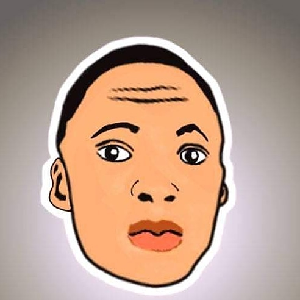

OO
home
Hi there,
I am
Web Developer / Creative DesignerMeet Olawole
I'm a Mathematics Educationist by degree, but i've been endowed with the full custom knowledge of web developing and accessibility. Having based as a frontend developer, I possess working skills in its stacks which includes integrated knowledge of Html, CSS and Javascript. Also included in sidelines is my knowledge of bootstrap, tailwindcss and Sass/Scss. I am keened to working alongside Back-end developer, Graphic designers and User Experience(UX) designers to ensure all elements of web creation are consistent. I also possess competent skill in the area of design using Adobe photoshop and Adobe Xd both in web designs and creative designs
Education
University Of Nigeria, Nsukka B.Sc Mathematics Education 2016 - 2019
Web Development
Designs
Web Development


Designs
